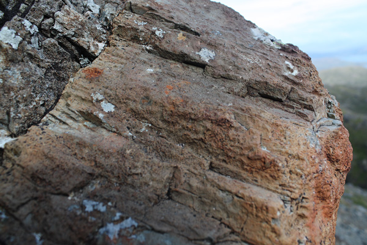
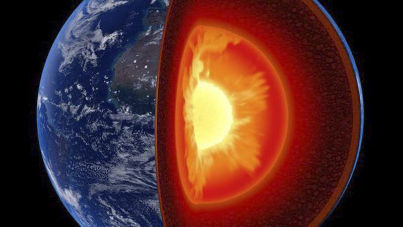
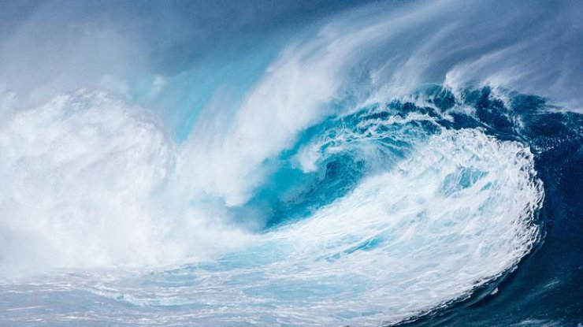

Магматические породы - это результат кристаллизации
Что изучает подраздел геологии палеонтология?
Какой из этих слоёв нашей планеты самый тонкий?
Сколько лет Земле?
За счёт чего Земля ежесуточно прибавляет в весе 400 тонн?
Какая из этих стихий возникает вследствие подводного землетрясения?
Поздравляем! Викторина пройдена. Теперь ты знаешь о минералах намного больше.
Количество ошибок: